MLF End Term14 questions40 marks6 SA · 5 MSQ · 3 MCQImprovement / forenoon / QDD1
Elapsed 00:00
Comprehension passage - the questions below it refer to this
A company produces two types of products P1 and P2. The cost price per unit of P1 and P2 are ₹2 and ₹3, respectively. The production process requires two types of resources: labor hours and machine hours. Each unit of p1 requires 2 labor hours and 1 machine hour, while each unit of P2 requires 1 labor hour and 3 machine hours. The company has constraints on the availability of labor and machine hours, which are 80 and 90 hours, respectively. Use the above information to answer the given sub-questions.
Q1MCQ2 marks
Choose the correct Primal optimization problem from the following.
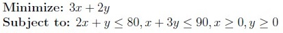
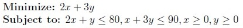
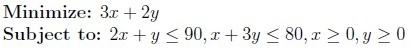
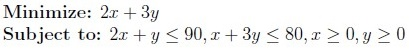
Q2SA3 marks
Find the minimum cost price of the products.
Q3MSQ3 marksselect all that apply
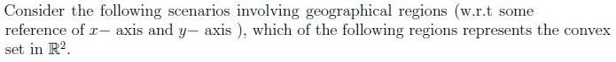
A circular park with one side boundary is a circle of radius of 200 meters andanother side boundary is a circle of radius of 300 meters, both centered at the origin.
City district defined by the region above the x-axis within a radius of 10 milesfrom the origin, forming a semicircle.
A triangular region with vertices at (0, 0), (1, 0), and (0, 1).
A path consisting of two connected line segments (forming the boundaries ofthe path on either sides) formed a “V” shape with vertices at (0, 0), (2, 2), and (2, 0)
Q4MSQ3 marksselect all that apply
Which of the following options is/are true?
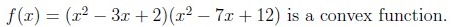
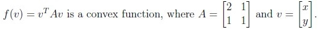
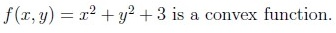
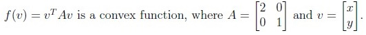
Q5SA3 marks
A farmer has 120 meters of fencing and wants to fence off a rectangular field that borders a straight river. The farmer does not need to fence along the river. Find the maximum possible fenced area of the field.
Q6SA3 marks
Suppose a random variable X has a mean μ of 70 and a standard deviation σ of 8. Using Chebyshev’s inequality, determine the maximum probability that X will deviate from the mean by more than 16 units. Enter the answer correct to two decimal places.
Q7SA3 marks
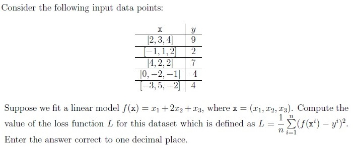
Q8SA3 marks
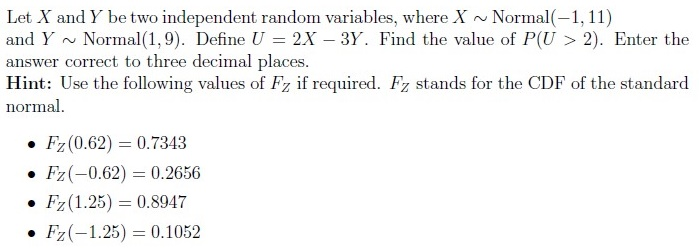
Q9MSQ4 marksselect all that apply
Consider a square matrix A of order 3 such that trace(A) = 3 and det(A) = 2. If 1 is an eigenvalue of A, then which of the following options is/are true?
Matrix A is symmetric matrix.
Matrix A is Hermitian matrix.
1 + i is an eigenvalue of A.
2 − i is an eigenvalue of A.
Matrix A is diagonalizable.
Q10MSQ4 marksselect all that apply
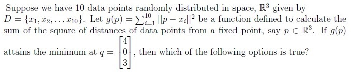
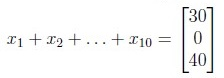
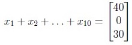
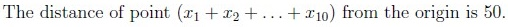
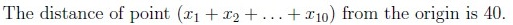
Q11MSQ2 marksselect all that apply
Which of the following is/are true about PCA?
PCA will transform the original data set onto a lower dimension subspace suchthat the variance of the project is maximized.
PCA calculates the mean of each data set to determine its significance.
PCA can be used to reduce the dimensionality of the dataset.
PCA will transform the original data set onto a lower dimension subspace suchthat the reconstruction error is maximized.
Comprehension passage - the questions below it refer to this
Based on the above data, answer the given subquestions.
Auto-generated summary from the source site. Handy as a checklist; the lessons above explain each idea from scratch.
Here’s a structured summary of core topics, concepts, principles, and equations essential for the exam, followed by Mermaid knowledge graphs to visualize relationships.
Core Topics & Key Concepts
1. Linear Programming (Optimization)
Primal Problem Formulation:
Objective: Minimize/maximize a linear function (e.g., cost/profit).
Constraints: Linear inequalities (e.g., resource limits).
Standard Form:
Minimize cTxsubject to Ax≤b,x≥0
Example (Q2, Q3):
Objective: Minimize 2x+3y (cost of P1 and P2).
Constraints:
2x+y≤80(labor hours),x+3y≤90(machine hours)
Solution: Use graphical method or simplex algorithm to find the feasible region’s vertices and evaluate the objective function.
Key Equations:
Feasible Region: Intersection of all constraints.
Optimal Solution: Vertex of the feasible region with the lowest/highest objective value.
2. Convex Sets & Functions
Convex Set:
A set S is convex if for any x,y∈S and λ∈[0,1], λx+(1−λ)y∈S.
Examples (Q4):
Semicircle (convex).
Triangle (convex).
"V" shape (not convex unless filled).
Convex Function:
A function f is convex if for all x,y and λ∈[0,1]:
f(λx+(1−λ)y)≤λf(x)+(1−λ)f(y)
Tests for Convexity (Q5):
Quadratic Forms: f(v)=vTAv is convex if A is positive semidefinite (eigenvalues ≥0).
Example: A=[2111] (eigenvalues: 1.5±0.55>0).
Hessian Matrix: For f(x,y)=x2+y2+3, the Hessian is I (positive definite).
Product of Convex Functions: Not necessarily convex (e.g., f(x)=(x2−3x+2)(x2−7x+12) is not convex).
Key Equations:
Hessian for f(x,y):
H=[∂x2∂2f∂y∂x∂2f∂x∂y∂2f∂y2∂2f]
Positive Semidefinite Check: All eigenvalues of H≥0.
3. Optimization in Geometry
Maximizing Area (Q6):
Problem: Fence a rectangular area along a river (3 sides fenced) with 120m of fencing.
Solution:
Let width = w, length = L.
Constraint: 2w+L=120.
Area: A=w×L=w(120−2w).
Maximize: Find vertex of parabola A=−2w2+120w.
Optimal: w=30, L=60, A=1800.
Key Equation:
A=−2w2+120w(Quadratic optimization)
4. Probability & Statistics
Chebyshev’s Inequality (Q7):
For any random variable X with mean μ and variance σ2:
P(∣X−μ∣≥kσ)≤k21
Example: μ=70, σ=8, k=2:
P(∣X−70∣≥16)≤41=0.25
Linear Combinations of Normals (Q9):
If X∼N(μX,σX2) and Y∼N(μY,σY2) are independent, then:
U=aX+bY∼N(aμX+bμY,a2σX2+b2σY2)
Example: U=2X−3Y where X∼N(−1,11), Y∼N(1,9):
U∼N(2(−1)−3(1),4(11)+9(9))=N(−5,125)
Standardize to find P(U>2):
P(Z>1252−(−5))=P(Z>0.62)=0.2656
Key Equations:
Z=σUU−μU,P(U>u)=1−FZ(σUu−μU)
5. Linear Regression (Q8)
Loss Function (MSE):
L=n1i=1∑n(f(xi)−yi)2
Example: For f(x)=x1+2x2+x3 and given data points, compute L=4.2.
Key Steps:
Predict y^i=f(xi).
Compute squared errors (y^i−yi)2.
Average over all points.
6. Linear Algebra (Q10, Q15)
Eigenvalues & Diagonalizability (Q10):
Given: trace(A)=3, det(A)=2, eigenvalue λ1=1.
Find Other Eigenvalues:
λ1+λ2+λ3=3⟹λ2+λ3=2
λ1λ2λ3=2⟹λ2λ3=2
Solutions: λ2,λ3=1±i (complex conjugate pair).
Diagonalizable: Yes, if A has n linearly independent eigenvectors (true for distinct eigenvalues).
Nullspace (Q15):
For matrix A, solve Ax=0.
Example: Nullspace of A is span{1−21}.
Key Equations:
Characteristic polynomial: det(A−λI)=0
7. Principal Component Analysis (PCA) (Q12)
Goal: Reduce dimensionality while maximizing variance.
Steps:
Center the data (subtract mean).
Compute covariance matrix S.
Find eigenvalues/eigenvectors of S.
Project data onto top k eigenvectors (principal components).
Key Points:
Variance Maximization: PCA selects directions with highest variance.